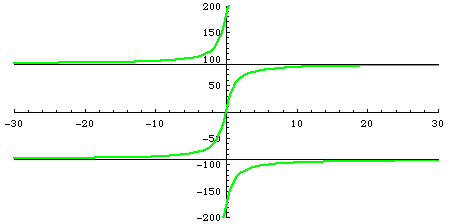

| Recall the angles theta and phi are defined by | ||||||||
| ||||||||
| Because arctan is single-valued between -90 and 90, theta = arctan(c/a) and phi = arctan(-b/d) defines the angles in that range. | ||||||||
|  | ||||||||
| By considering the signs of a and c, we can extend the range of theta to | ||||||||
| ||||||||
| A similar analysis gives | ||||||||
|
Return to Convering to IFS Parameters.